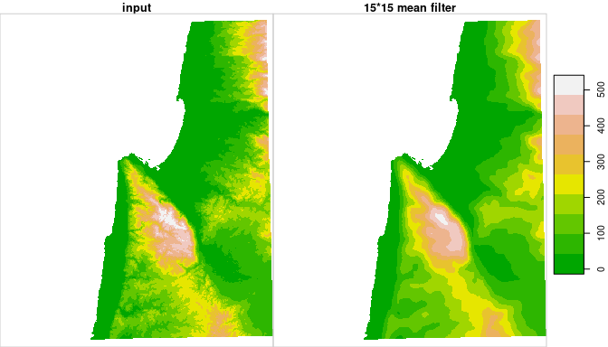
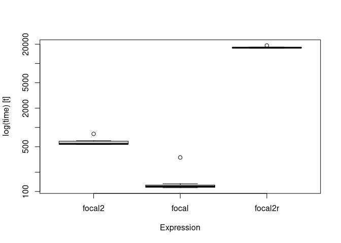

R package starsExtra provides several miscellaneous functions for working with stars objects, mainly single-band rasters. Currently includes functions for:
- Focal filtering
- Detrending of Digital Elevation Models
- Calculating flow length
- Calculating the Convergence Index
- Calculating topographic aspect and slope
Installation
CRAN version:
install.packages("starsExtra")GitHub version:
install.packages("remotes")
remotes::install_github("michaeldorman/starsExtra")Documentation
The complete documentation can be found at https://michaeldorman.github.io/starsExtra/.
Example
The following code applied a 15*15 mean focal filter on a 533*627 stars Digital Elevation Model (DEM):
data(carmel)
carmel_mean15 = focal2(
x = carmel, # Input 'stars' raster
w = matrix(1, 15, 15), # Weights
fun = "mean", # Aggregation function
na.rm = TRUE, # 'NA' in neighborhood are removed
mask = TRUE # Areas that were 'NA' in 'x' are masked from result
)The calculation takes: 0.5625446 secs.
The original DEM and the filtered DEM can be combined and plotted with the following expressions:
r = c(carmel, carmel_mean15, along = 3)
r = st_set_dimensions(r, 3, values = c("input", "15*15 mean filter"))
plot(r, breaks = "equal", col = terrain.colors(10), key.pos = 4)
Timing
The following code section compares the calculation time of focal2 in the above example with raster::focal (both using C/C++) and the reference method focal2r (using R code only).
library(microbenchmark)
library(starsExtra)
library(raster)
data(carmel)
carmelr = as(carmel, "Raster")
res = microbenchmark(
focal2 = focal2(carmel, w = matrix(1, 15, 15), fun = "mean", na.rm = FALSE),
focal = focal(carmelr, w = matrix(1, 15, 15), fun = mean, na.rm = FALSE),
focal2r = focal2r(carmel, w = matrix(1, 15, 15), mean),
times = 10
)
res
#> Unit: milliseconds
#> expr min lq mean median uq max neval
#> focal2 542.3506 546.0164 587.9224 554.3557 609.8761 793.5663 10
#> focal 114.3561 115.9764 142.2213 119.7932 125.9327 339.7064 10
#> focal2r 17236.5407 17367.5100 17734.2765 17634.1378 17902.5663 19048.0060 10
boxplot(res)